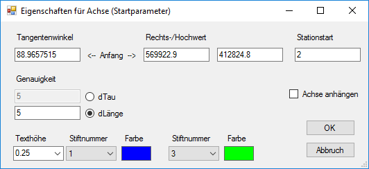

Tangentenwinkel
Angabe des Startwinkels.
Rechts-/Hochwert
Angabe der metrischen Koordinaten für den Startpunkt.
Stationsstart
Angabe des Startpunktes der Linienführung.
Genauigkeit
- dTau: Die Linienlänge wird durch die Veränderung der Krümmung betimmt.
- dLänge: bestimmt die maximale Länge für die Darstellung der Achsen.
Texthöhe / Stiftnummer / Farbe
Wählen Sie die Texthöhe, Stiftnummer und Farbe der Stationsbeschriftung. Die Stiftnummer entspricht der eingestellten Stiftnummer in ISBCAD. Wenn Sie die Zeichnung in ISBCAD auf der Zeichenfläche platzieren, werden die Elemente mit dem hier angegebenen Stift gezeichnet.
Stiftnummer / Farbe
Wählen Sie die Stiftnummer und Farbe der Linie.
Achse anhängen
Achse an den zuletzt erstellten Achsabschnitt anhängen.
OK
Öffnet den Dialog Stationsabschnitt für ...
Klicken Sie das entsprechende Trassierungselement an, das der Hauptachse hinzugefügt werden soll und bestätigen Sie mit OK. Der Dialog Achsabschnitt bearbeiten wird geöffnet.
Abbruch
Schließt den Dialog Eigenschaften für Achse (Startparameter).